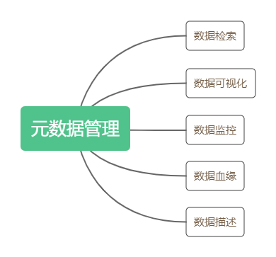
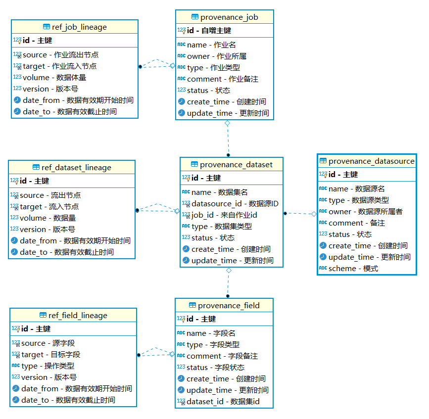
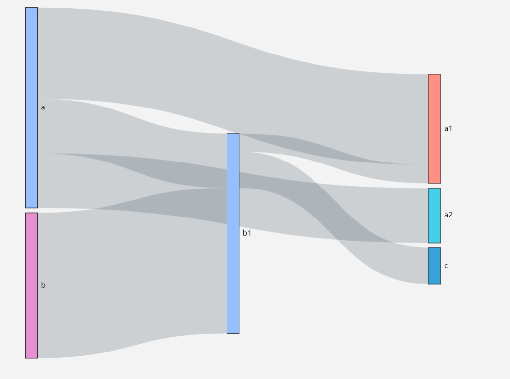
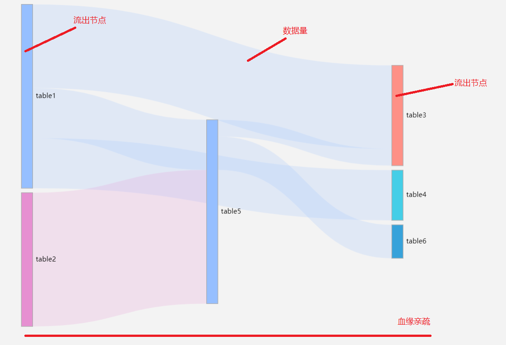
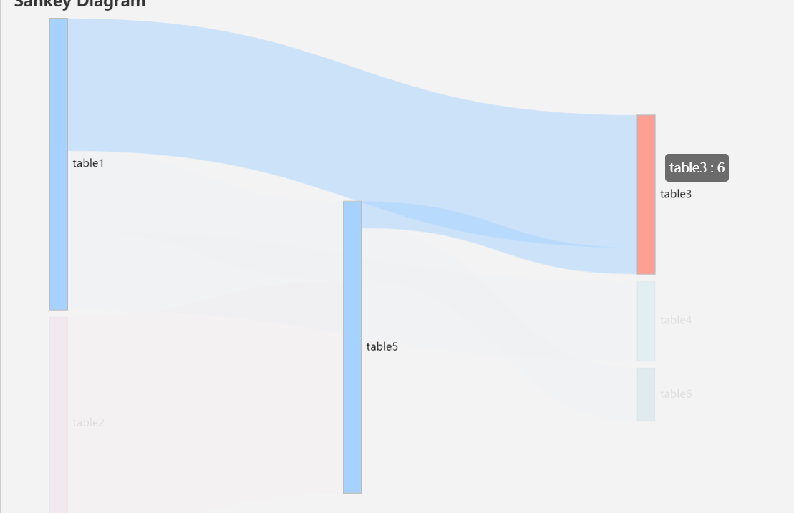
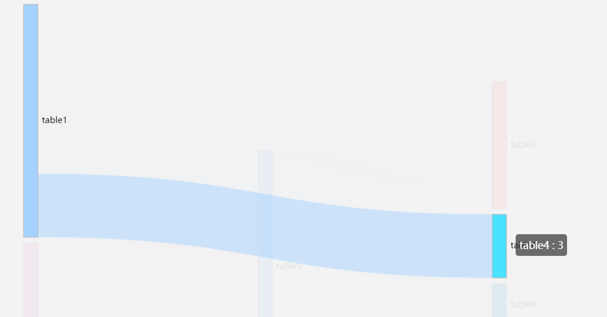
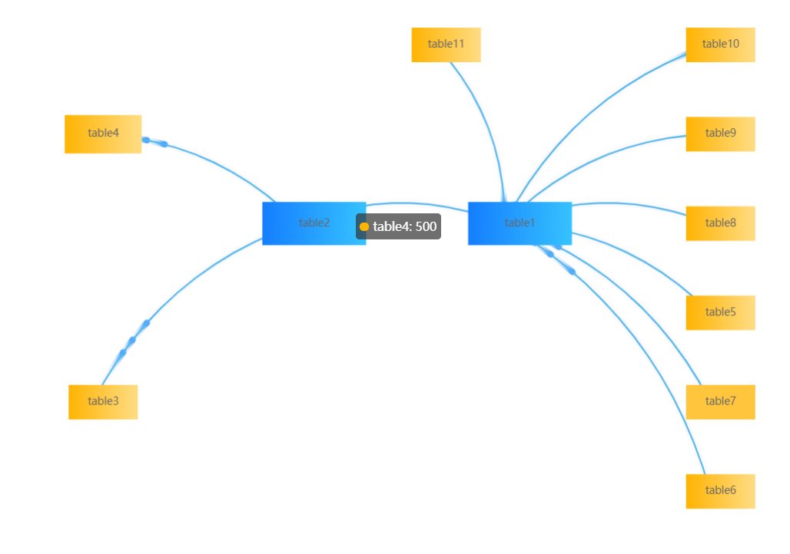

# 什么是数据血缘
数据血缘是数据治理里元数据管理的一个概念。
数据治理包括数据标准、数据质量、主数据、元数据、数据安全等多个方面。
对于元数据的管理，谷歌曾发表过一篇论文，里面详细的描述了谷歌他们是怎么做的： Goods：Google Dataset Search
谷歌将元数据管理分为了几个部分：

那么什么是数据血缘呢？在现实世界中，我们每个个体都是祖先通过生育关系一代代孕育而来，这样就形成了我们人类的各种血缘关系。在数据信息时代，我们庞大的数据在每时每刻产生，这些数据又经过各种加工组合、转换，又会产生新的数据，这些数据之间就存在着天然的联系，我们把这些联系称为数据血缘关系。
直白点说数据血缘指数据产生的链路，就是我们这个数据是怎么来的，经过了哪些过程和阶段。
# 特性
- 归属性：一般来说，特定的数据归属特定的团队或者个人
- 多源性：同一个数据可以有多个来源（多个父亲）。一个数据可以是多个数据经过加工而生成的，而且这种加工过程可以是多个。
- 可追溯性：数据的血缘关系，体现了数据的生命周期，体现了数据从产生到消亡的整个过程，具备可追溯性。
- 层次性：数据的血缘关系是有层次的。对数据的分类、归纳、总结等对数据进行的描述信息又形成了新的数据，不同程度的描述信息形成了数据的层次。
# 数据血缘的作用
# 数据溯源
溯源，指的是探寻事物的根本、源头。我们分析处理的数据，可能来源很广泛，有政府的数据，有互联网的数据，有通过数据交易从第三方获取的数据，还有自身拥有的数据。不同来源的数据，数据质量参差不齐，对分析处理的结果影响也不尽相同。当数据发生异常，我们需要能追踪到异常发生的原因，把风险控制在适当的水平。
数据的血缘关系，体现了数据的来龙去脉，能帮助我们追踪数据的来源，追踪数据处理过程。在数据的血缘关系可视化图形上，主节点的上面就是数据来源节点，非常清晰，一目了然。数据经过了哪些转换也能从可视化图形上看出来，对异常数据产生原因的分析帮助很大。
# 评估数据价值
数据的价值在数据交易领域非常重要，涉及到数据的定价。要对数据价值进行评估，就需要有依据。数据血缘关系，可以从几个方面给数据价值的评估提供依据：
- 数据受众。在血缘关系图上，下面的数据流出节点表示受众，亦即数据需求方，数据需求方越多表示数据价值越大；
- 数据更新量级。数据血缘关系图中，数据流转线路的线条越粗，表示数据更新的量级越大，从一定程度上反映了数据价值的大小；
- 数据更新频次。数据更新越频繁，表示数据越鲜活，价值越高。在血缘关系图上，数据流转线路的线段越短，更新越频繁。
# 数据质量评估
从数据的血缘关系图上，可以方便的看到数据清洗的标准清单，这个清单反映了对数据质量的要求。
# 数据归档、销毁的参考
如果数据没有了受众，就失去了使用价值。从数据的血缘关系图上看，最下面没有了数据节点，就可以去评估主节点所代表的数据是否要归档或者销毁了
# 数据血缘的级别
广义上，血缘分析包含以下 3 个级别：
- 作业级别:
大数据平台中的数据由不同作业生成，例如 Kettle,Spark,MR。在作业级别我们可以获取到更高层次的信息，如服务器、运行时长、等待时长、当前任务流状态等 - 数据集级别:
数据集即表，广义上包括 HDFS、HBase、关系型数据库、Kafka、Ftp、本地文件等。在表级别我们能获取到表的生成链路，表的重要程度（使用频率），表的基础信息 - 字段级别
字段级别是最苛刻的级别，在字段级别我们能追寻到某张表的字段来源于哪里，字段的重要性排名。
# 数据血缘的采集
分析大数据平台中的每一个存储媒介（关系型数据库，NoSql，Kafka，HDFS 等）和每一个作业工具（如 Flink，Spark，Pentaho 等），编写新的 ETL 来生成数据血缘。
从存储媒介中我们能获取表的信息，从作业工具中我们能获取数据流转线路。
# 数据源信息
数据源的基础信息包括：数据源名，数据源类型，数据源配置，数据源状态，数据源所属等
采集数据源信息一般有以下手段
- 通过 SQL 脚本或者程序脚本录入数据源
- 进行 ETL 采集数据血缘的时候录入
- 手工录入
# 数据集信息
以下是部分存储媒介提取方法
- 关系型数据库：
- 从 DDL 或者 SQL 语句中提取表结构
- 创建触发器提取表结构
- KafKa: 当 kafka 作为 ODS 的时候，每个 topic 名就是表名
# 数据流转线路
以下是部分作业工具提取方法
- Pentaho：
Pentaho 使用 kettle 作为 ETL 工具，Kettle 分为 KJB 和 KTR 文件，其中 KJB 控制作业流程，KTR 控制实际转换。- 对于 KJB 文件，我们可以获取作业信息
- 对于 ktr 文件，我们可以获取具体的数据流转线路。ktr 实际上是一个 xml 文件，将 ktr 转换为 xml 文件然后用 kettle 读取遍历便能获取到数据链路
# 数据量，频率
通过分析日志文件获取，或者在 etl 中发送相关数据到一个专门记录数据血缘的服务
# 数据模型设计

| 表名 | 描述 |
|---|---|
| provenance_job | 作业信息表 |
| provenance_dataset | 数据集信息表，即 table 名 |
| provenance_field | 字段信息表 |
| provenance_datasource | 数据源信息表 |
| ref_job_lineage | 作业级别血缘关系表 |
| ref_dataset_lineage | 数据集级别血缘关系表 |
| ref_filed_lineage | 字段级别血缘关系表，type 字段指聚合的方法，如 sum，max，min |
作业表：provenance_job
| 字段名 | 类型 | 描述 |
|---|---|---|
| id | bint | 自增主键 |
| name | varchar(128) | 作业名 |
| owner | varchar(64) | 所属团队 |
| type | varchar(64) | 作业类型 |
| comment | varchar(256) | 备注 |
| status | int | 状态 1 为正常 0 为失效 |
| create_time | timestamp | 创建时间 |
| update_time | timestamp | 更新时间 |
数据表：provenance_dataset：
| 字段名 | 类型 | 描述 |
|---|---|---|
| id | bint | 自增主键 |
| name | varchar(128) | 数据名 |
| datasource_id | bint | 数据源 id |
| job_id | bint | 作业 id |
| type | varchar(64) | 数据类型 |
| comment | varchar(256) | 备注 |
| status | int | 状态 1 为正常 0 为失效 |
| create_time | timestamp | 创建时间 |
| update_time | timestamp | 更新时间 |
字段表：provenance_filed：
| 字段名 | 类型 | 描述 |
|---|---|---|
| id | bint | 自增主键 |
| name | varchar(128) | 数据名 |
| dataset_id | bint | 数据 id |
| type | varchar(64) | 字段类型 |
| comment | varchar(256) | 备注 |
| status | int | 状态 1 为正常 0 为失效 |
| create_time | timestamp | 创建时间 |
| update_time | timestamp | 更新时间 |
数据源表：provenance_datasource：
| 字段名 | 类型 | 描述 |
|---|---|---|
| id | bint | 自增主键 |
| name | varchar(128) | 数据源名 |
| owner | varchar(64) | 所属团队 |
| type | varchar(64) | 数据源类型 |
| scheme | varchar(64) | 模式名 |
| comment | varchar(256) | 备注 |
| status | int | 状态 1 为正常 0 为失效 |
| create_time | timestamp | 创建时间 |
| update_time | timestamp | 更新时间 |
作业链路表：ref_job_lineage
| 字段名 | 类型 | 描述 |
|---|---|---|
| id | bint | 自增主键 |
| source | bint | 流出作业节点 id |
| target | bint | 流入作业节点 id |
| volume | int | 更新量级 |
| version | bint | 版本号 |
| date_from | timestamp | 数据有效开始时间 |
| date_to | timestamp | 数据有效截止时间 |
数据链路表：ref_dataset_lineage
| 字段名 | 类型 | 描述 |
|---|---|---|
| id | bint | 自增主键 |
| source | bint | 流出数据节点 id |
| target | bint | 流入数据节点 id |
| volume | int | 更新量级 |
| version | bint | 版本号 |
| date_from | timestamp | 数据有效开始时间 |
| date_to | timestamp | 数据有效截止时间 |
字段链路表：ref_filed_lineage
| 字段名 | 类型 | 描述 |
|---|---|---|
| id | bint | 自增主键 |
| source | bint | 源字段 id |
| target | bint | 目标字段 |
| type | varchart(64) | 聚合类型，如 max,min,sum,avg |
| version | bint | 版本号 |
| date_from | timestamp | 数据有效开始时间 |
| date_to | timestamp | 数据有效截止时间 |
建立好数据表后建立对应的 ETL 把数据装载进表中。因为作业与数据处于变动的状态中，三张关系表将设计成拉链表，每天生成新的记录，用 version 字段区分。
这样做有三个好处
- 数据血缘的亲疏由数据量来决定，记录数据量有利于获取更准确的血缘关系
- 有利于观察动态的血缘关系
- 能监控作业的执行情况
# 血缘关系可视化
将血缘关系可视化能让我们更加直观的分析数据平台中的血缘关系，在分析血缘关系的时候一般使用桑基图或者关系图。
# 桑基图
桑基图，也叫桑基能量分流图或者桑基能量平衡图，桑基图最明显的特征就是，始末端的分支宽度总和相等，即所有主支宽度的总和应与所有分出去的分支宽度的总和相等，通常应用于具有流向关系，层级关系的数据可视化分析。
桑基图由节点与流量组成，下面是桑基图的样子

血缘关系图中从三个元素分析数据血缘，分别是数据节点，流转线路，血缘亲疏

# 数据节点
用来用来表现数据的所有者和数据层次信息或终端信息
有两种类型：数据流出节点，数据流入节点
- 数据流入节点可以有多个，是主节点的父节点，表示数据来源
- 数据流出节点也可以有多个，是主节点的子节点，表示数据的去向；包括一种特殊的节点，即终端节点，终端节点是一种特殊的数据流出节点，表示数据不再往下进行流转，这种数据一般用来做可视化展示。
# 流转线路
表现的是数据的流转路径，从左到右流转。数据流转线路从数据流出节点出来往数据流入节点汇聚
数据流转线路表现了两个维度的信息，分别是方向、数据量级
- 方向默认从左到右
- 数据量级通过线条的粗细来表现。线条越粗表示数据量级越大，线条越细则表示数据量级越小。
# 血缘亲疏
流入节点到流出节点之间所间隔的节点越少，两个节点的血缘关系越亲密。比如 table3 与 table6 都来源于 table1，但是 table3 中间隔了一个 table5 节点，所以 table6 与 table1 的数据更加相似。血缘亲疏可以用于数据质量评估与数据销毁评估。


# 图表数据结构
图表数据类型与设计的关系表一致，只需要通过递归的方法查询节点的流转线路即可
[{ | |
source: 'table1', | |
target: 'table3', | |
value: 5 | |
}, { | |
source: 'table1', | |
target: 'table4', | |
value: 3 | |
}, { | |
source: 'table2', | |
target: 'table5', | |
value: 8 | |
} | |
}] |
# 关系图
关系图是展现事物相关性和关联性的图表，关系图由节点与流转线路组成。关系图能展示血缘之间的关系但是不能很好的展示数据量级，关系图比较适用于展现字段级别的血缘关系。

# 数据节点
数据节点上显示的当前节点的数据量总计
# 流转线路
表现的是数据的流转路径，从左到右流转。数据流转线路从数据流出节点出来往数据流入节点汇聚
流转线路上标识了流转的方向
# 图表数据结构
[{ | |
source: "table1", | |
target: "table5" | |
}, | |
{ | |
source: "table1", | |
target: "table8" | |
}] |